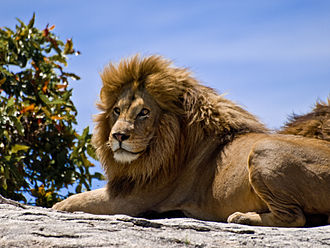

lion
ლომი (ლათ. Panthera leo) — მტაცებელი ძუძუმწოვარი კატისებრთა ოჯახის, პანტერათა გვარის წარმომადგენელი. მისი სხეულის სიგრძე (ხვადისა) 180-240 სმ, მასა 180-227 კგ აღწევს. ძუ ტანად ხვადზე უფრო პატარაა. ლომს აქვს ძლიერი მოქნილი სხეული, მასიური თავი, გრძელი დინგი, შავი ფუნჯით დაბოლოებული გრძელი კუდი. მოზრდილ ხვადს ფაფარიც აქვს, დანარჩენი ბალანი მოკლეა და მოყვითალო. ბოკვერი ხალებიანია. ცნობილია ლომის 2 ქვესახეობა - აფრიკული და აზიური.